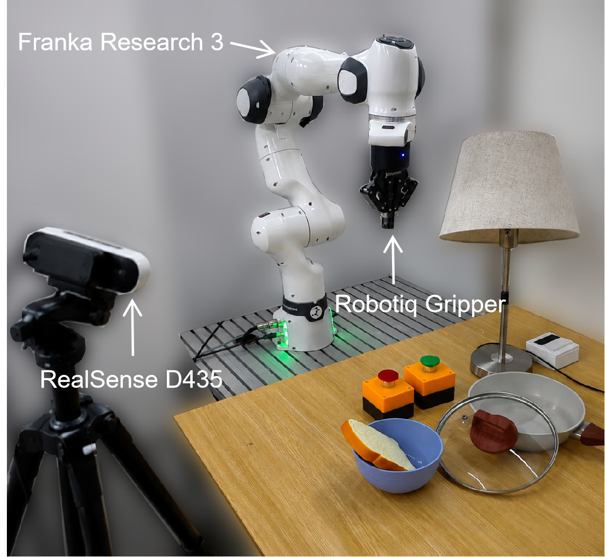

Single arm
Franka Research 3
Lamp switch and cord
press the lamp switch → pull the lamp cord
Two buttons press
press the green button → press the red button
Bread and pan
pick the bread → place the bread into the pan → pick the lid → place the lid over the pan